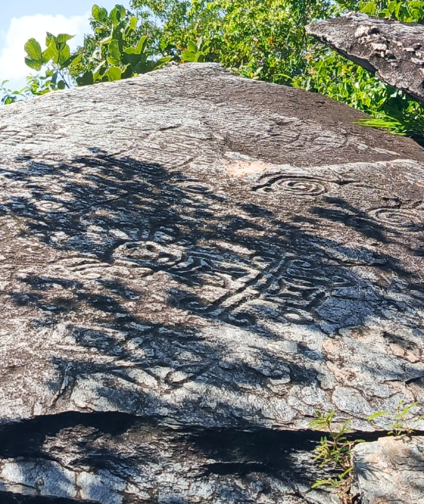

📍 Estación 3 · QR-003

Escanea este código en la piedra física para abrir esta ficha y escuchar la historia narrada por el asistente de voz.
"Ante ti se encuentra El Guardián, una de las figuras más imponentes del sitio. Con más de dos metros de altura, esta figura humanoide porta un elaborado tocado ceremonial que indica su alto rango espiritual dentro de la comunidad precolombina. Su postura erguida y los brazos extendidos sugieren un ritual de invocación o bienvenida..."
Cargando descripción…